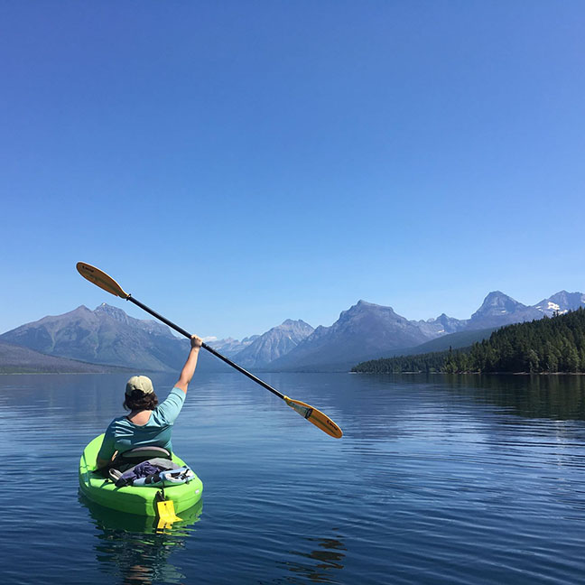

Glacier National Park holds a special place in my heart. I've been mamking trips here summerly since I was a just a baby. This summer - instead of biking the Going-to-the-Sun road as I normally do - I kayaked McDonald Lake. Glacier National Park is a special place. If you are planning on visiting, be sure to visit the Park's website for trip planning and to compile your list of must-see places.

Return to the home page